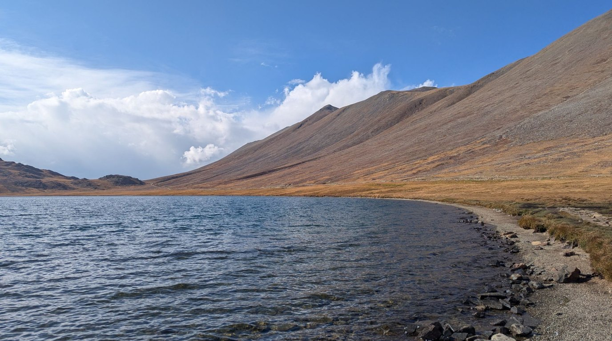

2026年 パキスタン・イスラマバード／フンザ／スカルドゥ マーケット調査レポート
ハラール前提・山岳観光の季節性・決済のデジタル化から読み解く、外食・食品ビジネスの参入条件

調査概要：北部の山岳地帯と首都を、6つのテーマで整理
調査目的：パキスタンの外食・観光・消費市場を、日本企業の進出検討の観点で整理する。①外食・カフェ ②ギルギット・バルティスタン（GB）観光 ③ハラール・宗教配慮・規制 ④決済・デリバリー ⑤日本食・日系企業 ⑥アドベンチャー観光の6テーマ構成。
調査対象エリア：イスラマバード／GBのフンザ（カリマバード）・スカルドゥ・アッターバード湖・フンジェラブ国立公園（中国国境）・デオサイ高原
調査日程：現地訪問 2026年9月18日〜27日（10日間）／デスクリサーチ 2026年10月27日時点の公開情報
調査手法：公開情報（政府・中銀・報道・JETRO・USDA等）に、現地観察（調査者の体験・写真・領収書・見積もり）を加えて分析。全項目に出典・年月・信頼度を付与しています。体系的なヒアリング調査は行っておらず、現地観察は調査者1名（n=1）の体験です。
Key Finding：「人口の大半がムスリム」という前提と、「山岳観光は国内客中心・季節と天候に左右される」という構造が、商品設計と立地・業態の選択を左右します。
6つのテーマから見えた、パキスタン市場の前提条件
01. ハラール対応は“通関の前提”
人口の96.35%がムスリム。輸入品は認定機関のハラール証明、ウルドゥー語表示、残存期限の要件（50%／66%）が必要で、酒類・酒類を含む製品の商業輸入は禁止です。醤油・みりん・出汁などの日本産調味料は、アルコールや動物由来原料の扱いが論点になります。
02. 山岳観光は国内客中心・季節性が大きい
GBの外国人は約2.5万人（2024年）で、国内客が主体です。デオサイは6〜11月、峠は冬季閉鎖。天候欠航・落石・停電のリスクがあり、通年稼働は難しい構造です。
03. 決済はデジタル化が急進、カードは限定的
正規チャネルの決済の92%がデジタルで、QR加盟店は380万に増加。一方、クレジットカードは330万枚にとどまります。現地では、予約資料が「現金のみ」の宿でもカード決済ができました（n=1）。
04. 物価高と、規制・料金の変動が大きい
CPIは10%台、食品は約14%。登山ロイヤルティは約300%引き上げの後に引き下げられ、ツアーの見積もりも交渉で大きく動きました。
※日系企業は約70社、在留邦人は738人と小さな市場で、日本食は富裕〜中間層向けの高価格帯が中心です。
続きはレポート購入で読めます
フルレポート（PDF・30ページ）には、外食・カフェ市場、GB観光（来訪者数・季節性・インフラ）、ハラール認証と輸入規制（日本産調味料の論点を含む）、決済・デリバリー・FBR POS、日本食・日系企業（カラチの日本食店3店のケーススタディ）、アドベンチャー観光（外国人入域数・ロイヤルティの変動・安全情報）、現地観察（フンザ・KKH・デオサイ・領収書6件・旅行費用）、日本企業への示唆を収録しています。
フルレポートの内容
- 調査概要・訪問行程
- 外食市場：物価・金利・チェーン・コーヒー・デリバリー
- GB観光：国内客の急増、外国人約2.5万人、季節性・天候・電力・環境規制
- ハラール①〜③：宗教構成、認証制度、輸入要件、日本産調味料・ゼラチン・酒類の確認事項
- 決済・デリバリー・EC・FBR POS・通信
- 日本食・日系企業、カラチの日本食店3店のケーススタディ、日パ関係・参入課題
- アドベンチャー観光①〜③：外国人入域数、規制・料金の変動、安全・渡航環境
- 現地観察：デオサイ高原のテント泊、ツアー見積もり、メニュー価格、領収書6件、旅行費用
- 日本企業への示唆（6つのポイント）・データの限界・引用・参考文献一覧
決済は Stripe を利用しています。購入後、PDF ダウンロードリンクが表示されます。